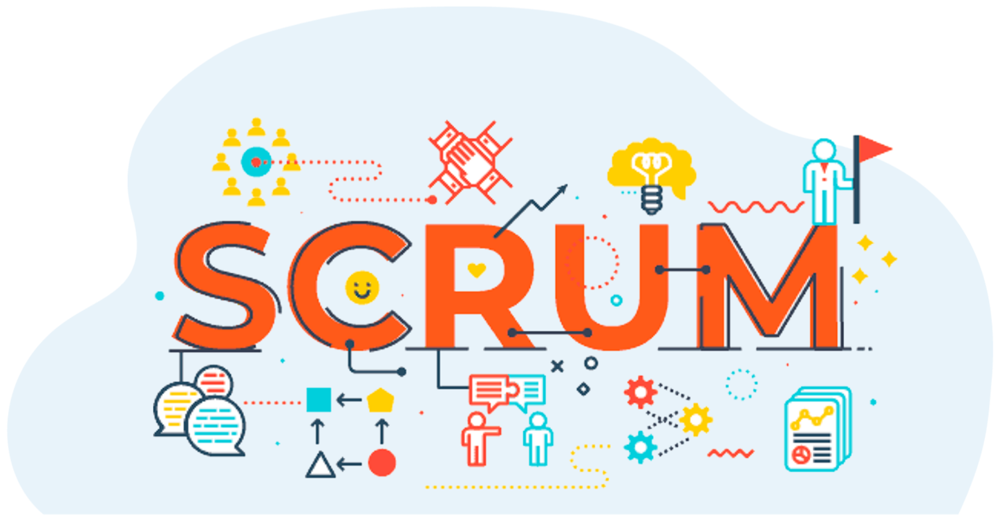

Гибкая
методология SCRUM в образовательном процессе
Выполнил Анисимов Андрей
Введение
Scrum - это гибкая методология управления проектами, часто применяемая в образовании для повышения эффективности учебного процесса.
Принципы Scrum в образовании
Итеративность и инкрементальность
Самоорганизация и командная работа
Обратная связь и постоянное взаимодействие
Адаптивность и гибкость
Преимущества Scrum в учебном процессе
Развитие командной работы и лидерских навыков
Более эффективное управление временем и задачами
Улучшение взаимодействия между студентами и преподавателями
Быстрая адаптация к изменениям в образовательной программе
Примеры применения Scrum в образовании

Использование Scrum в учебных проектах, курсах по разработке программного обеспечения или для организации учебных задач может демонстрировать его эффективность в образовательном процессе.